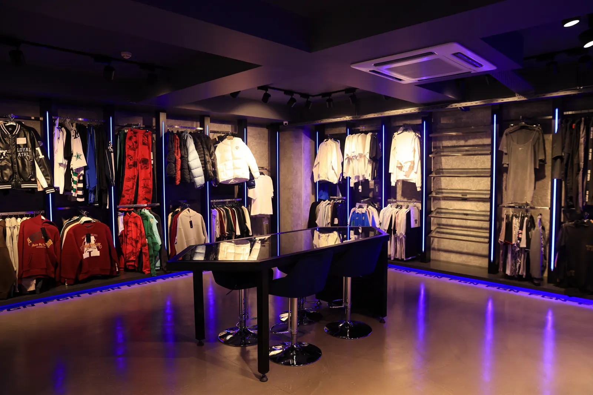

Önce dinleriz
Ürünün arkasındaki tasarım, referans ve ticari ihtiyaçlarla başlarız.
TANDOĞDU TEKSTİL HAKKINDA
Kendi kumaş üretimimizi ürün geliştirme ve konfeksiyonla birleştiriyor, müşterilerimizin fikirlerini pazara hazır ürünlere dönüştürüyoruz.
İyi bir ürün dikimden çok önce başlar. Brifi anlamak, doğru kumaşı seçmek ve bilinçli geliştirme kararları vermek gerekir.
Çalışmalarımız kumaş, numune ve konfeksiyonu ortak bir süreçte birleştirir. Müşterilerimiz bir tasarım veya görsel referansla gelir; biz bunu yorumlar, fiziksel numuneye dönüştürür ve üretim için geliştiririz.
Kendi kumaşlarımızı üretmemiz somut bir avantajdır. Malzeme kararlarını yakından izleyebilir, gelişen ürünün ihtiyaçlarına yanıt verebiliriz. Böylece fikirden bitmiş ürüne daha özenli bir yol oluşur.
Murat Tandoğdu, deneyimini, firmanın ihracat odağını ve çalışma biçimini şekillendiren yolculuğu anlatıyor.
MURAT TANDOĞDU · HİKÂYEMİZ
Kumaş bizim için sonradan seçilen bir unsur değildir. Ürünün dokusunu, kalıbını, rengini ve performansını belirler. Doğrudan kumaş üretimi, bu temeli ürünü geliştiren ekibe yakın tutar.
Üretimi keşfedinUzun yıllardır birlikte çalıştığımız müşteriler; tutarlı işin, açık iletişimin ve bitmiş ürüne gösterilen özenin oluşturduğu güveni yansıtır.
Ürünün arkasındaki tasarım, referans ve ticari ihtiyaçlarla başlarız.
Numune, seri üretimden önce kararları görünür hale getirir.
Kumaş testleri, üretim numunesi ve son işlem detaylara odaklanmamızı sağlar.


Müşterilerimiz için yaptığımız üretimin yanında kendimize ait bir markamız da var. Bu bakış, markaların ürün geliştirirken ve sunarken karşılaştığı kararlara bizi yakın tutar.
Showroom’u ziyaret edinBir sonraki ürününüzün veya koleksiyonunuzun yönünü bizimle paylaşın.